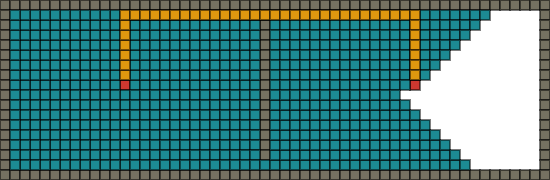

幅優先探索
実行例
 実行結果を見る
ソースコード
通常
TypeScript: app.ts
アニメーション版
TypeScript: app.ts
解説/アルゴリズム
幅優先探索はグラフの探索を行うためのアルゴリズムです。
まず、上記のような探索対象となるグラフを用意します。
次に探索を開始する頂点を選択します。ここでは(1)を選んだとします。
(1)に繋がっている 1 つ離れた各頂点(2, 3, 4)を調べ、次は 2 つ離れた各頂点(5, 6, 7, 8)を調べ・・・と始点に近いところから網羅的に探索を行うのが幅優先探索の特徴です。
具体的なアルゴリズムは下記のとおりとなります。
- 始点を配列に加えます。
- 配列から
先頭にある頂点を取り出します。 - 取り出した頂点につながっている
未探索の頂点を全て配列の末尾に追加します。 - 配列の中身が空なら処理を終了、そうでなければ 2 に戻ります。
// 頂点数
const n = 8;
// 各頂点に繋がっている頂点
const edge = [[1, 2, 3], [4, 5], [], [6, 7], [], [], [], []];
// 始点を入れておく
const queue = [0];
// 各頂点が探索済みかどうかを保持しておく配列
const seen: boolean[] = new Array(n).fill(false);
// 配列が空になるまでループ
while (queue.length > 0) {
// 配列の先頭にある頂点を取り出す
const cur = queue.shift();
console.log(cur);
// 取り出した頂点に繋がっている、次の頂点を列挙
for (let next of edge[cur]) {
// 次の頂点が既に探索済みならスキップ
if (seen[next]) continue;
// 次の頂点を探索済みにする
seen[next] = true;
// 配列の末尾に次の頂点を追加
queue.push(next);
}
}
始点から各頂点までの最短距離の計算
const n = 8;
const edge = [[1, 2, 3], [4, 5], [], [6, 7], [], [], [], []];
const queue = [0];
// 距離として入ることがない最大値
const INF = 1000000000;
// 全ての頂点までの距離をINFにしておく
const dist: number[] = new Array(n).fill(INF);
// 始点までの距離を0にしておく
dist[0] = 0;
while (queue.length > 0) {
const cur = queue.shift();
console.log(cur);
for (let next of edge[cur]) {
// 次の頂点までの距離がINFでなければ探索済みなのでスキップ
if (dist[next] != INF) continue;
// 次の頂点までの距離を今の距離+1にする
dist[next] = dist[cur] + 1;
queue.push(next);
}
}
距離を入れる配列は INF でなければ探索済みということがわかるので、前に掲載した boolean 型配列の機能を兼ねることができ一石二鳥です。
グリッドでの幅優先探索
// マップ
let map: Cell[];
// 始点/終点
let sx: number, sy: number;
let gx: number, gy: number;
// 未探索頂点を格納する配列
let nexts: Point[];
// 始点から各頂点までの距離
// 各頂点が未探索かどうかの判定に使用される
let dist: number[][];
// 未探索頂点配列に始点を登録
nexts = [{ x: sx, y: sy }];
// 各頂点までの距離のデフォルト値の設定
// 極端に大きい値や-1のような、設定されることがないであろう値を入れておく
const INF = 1000000000;
dist = [];
for (let y = 0; y < H; y++) {
dist[y] = new Array(W).fill(INF);
}
// 始点までの距離を0にしておく
dist[sy][sx] = 0;
// 探索候補が無くなったら目的の頂点が発見できず探索失敗となる
while (0 < nexts.length) {
// 配列から先頭要素の頂点を取り出す
const next = nexts.shift();
const [cx, cy] = [next.x, next.y];
// 目的の頂点なら探索成功。ループ処理を抜ける
if (cx == gx && cy == gy) break;
// 繋がっている頂点位置を計算
for (let i = 0; i < 4; i++) {
const tx = cx + dx[i];
const ty = cy + dy[i];
// マップ外や通れない頂点、すでに探索済みの頂点ならcontinue
if (!(0 <= tx && tx < W && 0 <= ty && ty < H)) continue;
if (getTile(tx, ty) != Cell.Floor) continue;
if (dist[ty][tx] != INF) continue;
// 始点からの距離を更新することで、この頂点は探索済みであることを示す
dist[ty][tx] = dist[cy][cx] + 1;
// 未探索頂点配列に追加
nexts.push({ x: tx, y: ty });
}
}
グリッドでの幅優先探索実装例です。
経路の出し方
ただ探索を行うのではなく、1-4-8 のように、開始～目的頂点までの経路を出力したい場合があります。
prevs[index(nextNode)] = curNode;
その場合は連想配列などを用意しておき、今探索している頂点を、繋がっている次の頂点のインデックスをキーとして保存しておくという方法があります。
prevs[2] = 1の頂点;
prevs[3] = 1の頂点;
prevs[4] = 1の頂点;
たとえば 1 に繋がっている頂点が 2,3,4 の場合は上記のように保存しておくと、2,3,4 の頂点から前の頂点である 1 にいつでもアクセスが可能となります。
// 連想配列を用意
prevs = [];
while (0 < nexts.length) {
const next = nexts.shift();
const [cx, cy] = [next.x, next.y];
if (cx == gx && cy == gy) break;
for (let i = 0; i < 4; i++) {
const tx = cx + dx[i];
const ty = cy + dy[i];
if (!(0 <= tx && tx < W && 0 <= ty && ty < H)) continue;
if (getTile(tx, ty) != Cell.Floor) continue;
if (dist[ty][tx] != INF) continue;
dist[ty][tx] = dist[cy][cx] + 1;
nexts.push({ x: tx, y: ty });
// 注目している地点(tx, ty)から前の地点(cur.x, cur.y)を参照するために連想配列に保存する
prevs[ty * W + tx] = { x: cx, y: cy };
}
}
グリッドでの経路保存例です。
let routes: Point[] = [];
// 目的地点から逆に辿る
let cx = gx;
let cy = gy;
while (true) {
// 逆に辿っているため配列に追加するときは前から要素を入れる
routes.unshift({ x: cx, y: cy });
// 始点まで来たら終了
if (cx === sx && cy === sy) {
break;
}
// 連想配列から前の地点を取り出す
const index = cy * W + cx;
const prev = prevs[index];
cx = prev.x;
cy = prev.y;
}
console.log(routes);
グリッドでの経路再現例です。
計算量
全ての頂点(V)と辺(E)を走査するので計算量は になります。
最短経路
始点から終点まで複数のルートがある場合でも、幅優先探索は始点から近い順に走査を行うため、保存される上記の経路は最短経路であることが保証されます。